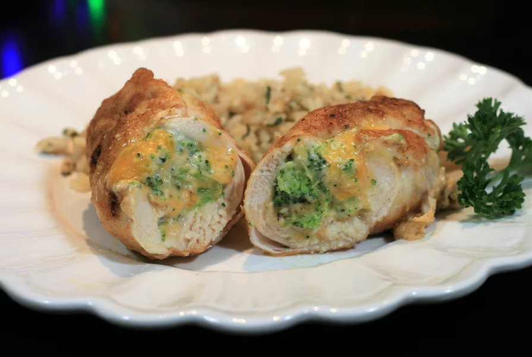

Broccoli Cheese Stuffed Chicken

Description
This cheesy broccoli chicken is the perfect comfort food on a cold day. By buying thin-sliced chicken cutlets, you save yourself the work of slicing them yourself, however feel free to cut regular-sized chicken breasts if you prefer. Slice in half horizontally, then pound thin to about a 1/4-inch thickness. Feel free to change up the flavor of The Laughing Cow® cheese for variety.
Ingredients
- 3 thin chicken breast cutlets
- salt and ground black pepper
- 3 wedges spreadable garlic and herb cheese, softened
- 1 cup frozen broccoli florets,thawed and finely chopped
- 1/4cup shredded shar chedder cheese
- 8 toothpicks, or as needed
- 11/2 table spoons all-purpose flour
- 1/2 teasppon paprika
- 1 tablespoon olive oil
Directions
- Preheat the oven to 375 degrees F
- Pound chicken cutlets to 1/4-inch thickness between two piecesof plastic wrap. Sprinkle both sides of cutlets with salt and pepper. Set aside.
- Mash cheese wedges with a fork in a small bowl and stir to a creamy consistency. Add broccoli and shredded cheddar cheese and stir to combine
- Spread broccoli filling evenly over the middle of each cutlet. Start from one end, roll cutlets up and secure edges with toothpicks.
- Combine flour and paprika in a shallow bowl. Dredge chicken rolls in the mixture.
- Heat olive oil in a oven-safe skillet over medium-high heat. Place chicken rolls into skillet and cook until browned, 2 to 3 minutes. Turn over and brown the other side for an additional 2 to 3 minutes.
- Place skillet into the preheated oven and bake until chicken is no longer pink in the center and juices run clear, 14 to 16 minutes. An instant-read thermometer inserted into the center should read at least 165 degrees F. Remove toothpicks and serve.